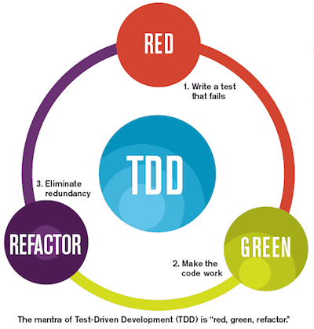
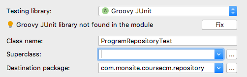

La méthode List<Program> findByToGreaterThanAndFromLessThan(LocalDateTime from, LocalDateTime to) semble faire tout ce qu'il faut.
Mais comment en être sûr ? Comment savoir que la personne qui va remonter un bug en production n'est qu'un sale menteur ?
C'est une technique de développement assez contre intuitive au départ, qui consiste à écrire des tests afin de conduire le développement. Elle présente de multiples intérêts :
Le cycle du TDD est le suivant (Red, Green, Refactor).
Kent Beck est à l’origine du TDD et des frameworks xUnit (jUnit en java).
En version 4, un test s’écrit avec des annotations :
import org.junit.*;
import static org.junit.Assert.*;
import java.util.*;
public class ArrayListTest { // le nom de la classe testée suffixée par Test
private ArrayList list;
@Before
public void setUp() { // exécuté avant chaque test
list = new ArrayList();
}
@After
public void tearDown() { // exécuté après chaque test
}
@Test
public void empty() { // un test
assertTrue(list.isEmpty());
}
@Test
public void add() { // un test
collection.add("itemA");
assertEquals(1, list.size());
}
}
On commence par générer la classe de test pour ProgramRepository
➤ Créez la classe com.monsite.coursecm.repository.ProgramRepository dans src/main/test
(il est possible d'utiliser le raccourci atl entrée quand le curseur est sur le nom de la classe).
➤ Choisissez ensuite un test en groovy sans Superclass.
Et on obtient donc
package com.monsite.coursecm.repository
class ProgramRepositoryTest {
}jUnit est extensible. Avec Spring, il est possible de manipuler notre Repository.
➤ Ajoutez le code suivant afin d'obtenir un premier test.
package com.monsite.coursecm.repository
import org.junit.runner.RunWith
import org.springframework.boot.test.context.SpringBootTest
import org.springframework.test.context.junit4.SpringRunner
@RunWith(SpringRunner) // faire tourner le test avec le plugin spring
@SpringBootTest // charger tous les composants de l'application
class ProgramRepositoryTest {
@Autowired // injection du repository
ProgramRepository programRepository
@Test
void count() {
println programRepository.count() // un test pas très intéressant
}
}➤ Exécutez le test, le nombre d'éléments en base devrait s'afficher dans votre console.
Afin de tester que la méthode fonctionne bien, il faudrait mettre la base dans un état connu.
On pourrait alors savoir ce que doit retourner notre service.
Oui mais...
Il n'y a qu'une seule base. Si tout le monde écrit en même temps, personne n'aura ce qu'il souhaite.
Il serait donc mieux que chacun ait sa propre base.
Il serait possible de démarrer une base mongodb en local, à la volée.
Spring boot se chargerait alors de démarrer la base et l'arrêter après les tests.
Voir l'exemple sur Spring Boot Integration Testing with Embedded MongoDB
Nous allons profiter de 2 atouts
➤ Rajoutez l'annotation @ActiveProfiles à notre classe de test.
package com.monsite.coursecm.repository
import org.junit.Test
import org.junit.runner.RunWith
import org.springframework.beans.factory.annotation.Autowired
import org.springframework.boot.test.context.SpringBootTest
import org.springframework.test.context.ActiveProfiles
import org.springframework.test.context.junit4.SpringRunner
@RunWith(SpringRunner)
@SpringBootTest
@ActiveProfiles('test') // le test va tourner avec un profil 'test'
class ProgramRepositoryTest {
@Autowired
ProgramRepository programRepository
@Test
void count() {
println programRepository.count()
}
}
➤ Dans src/main/resources, ajoutez un second fichier application-test.properties en choisissant le nom de votre base.
#mongodb
spring.data.mongodb.database=program-[votre nom]
Les profils ne servent pas que pour les tests.
Par exemple, il est possible de configurer l'application différement afin de la faire tourner en local, dans un environnement d'intégration ou en production.
➤ Mettez en place le test suivant
package com.monsite.coursecm.repository
import com.monsite.coursecm.domain.Program
import org.junit.After
import org.junit.Before
import org.junit.Test
import org.junit.runner.RunWith
import org.springframework.beans.factory.annotation.Autowired
import org.springframework.boot.test.context.SpringBootTest
import org.springframework.test.context.ActiveProfiles
import org.springframework.test.context.junit4.SpringRunner
import java.time.LocalDate
@RunWith(SpringRunner)
@SpringBootTest
@ActiveProfiles('test')
class ProgramRepositoryTest {
@Autowired
ProgramRepository programRepository
LocalDate today = LocalDate.now()
@Before
@After
void clean() {
// on vide la base avant et après chaque test
programRepository.deleteAll()
}
@Test
void save() {
programRepository.save(new Program(
name: 'Météo',
from: today.atTime(1, 45),
to: today.atTime(1, 50))
)
assert programRepository.count() == 1
assert programRepository.findAll()[0].name == 'Météo'
}
}
Les assert sont des power assert groovy, assez explicites en cas d'erreur.
Le code précédent devrait passer sans soucis.
Afin de tester cette méthode, je propose le code suivant :
@Test
void findByToGreaterThanAndFromLessThan() {
programRepository.save(new Program(
name: 'Météo',
from: today.atTime(12, 40),
to: today.atTime(12, 45))
)
programRepository.save(new Program(
name: 'Le 1245',
from: today.atTime(12, 45),
to: today.atTime(13, 25))
)
List<Program> programs = programRepository.findByToGreaterThanAndFromLessThan(today.atTime(12, 40), today.atTime(13, 25))
assert programs.size() == 2
assert programs[0].name == 'Météo'
assert programs[1].name == 'Le 1245'
}➤ Recopiez et exécutez ce code. Il devrait passer également.
Nous avons 2 tests en place et on voit bien que la sauvegarde des programmes en base prend de la place et n'est pas très lisible
Je propose de pouvoir écrire
programRepository.save(parse('01:45|01:50|Météo'))Ainsi, le premier test devient
@Test
void save() {
programRepository.save(parse('01:45|01:50|Météo'))
assert programRepository.count() == 1
assert programRepository.findAll()[0].name == 'Météo'
}➤ Réécrivez les 2 tests de cette façon en s'aidant des méthodes suivantes.
Program parse(String input) {
def tokens = input.tokenize('|')
new Program(from: todayAt(tokens[0]), to: todayAt(tokens[1]), name: tokens[2])
}
LocalDateTime todayAt(String input) {
today.atTime(time(input))
}
LocalTime time(String input) {
LocalTime.parse(input, DateTimeFormatter.ofPattern("HH:mm"))
}Le refactoring vaut tout autant pour les classes testées que pour les classes de test.
Que se passe t il si notre intervalle commence au milieu d'une émission ?
@Test
void 'findByToGreaterThanAndFromLessThan when from in the middle of a program'() {
programRepository.save(parse('12:40|12:45|Météo'))
programRepository.save(parse('12:45|13:25|Le 1245'))
List<Program> programs = programRepository.findByToGreaterThanAndFromLessThan(todayAt('12:42'), todayAt('13:25'))
// assert ????
}Que se passe t il si notre intervalle termine au milieu d'une émission ?
Que se passe t il si notre intervalle commence sur la fin d'un émission ?
➤ Mettez en place ces 3 tests afin de vérifier le bon fonctionnement de notre repository.
home{kind=link}
{kind=link}
{kind=link}